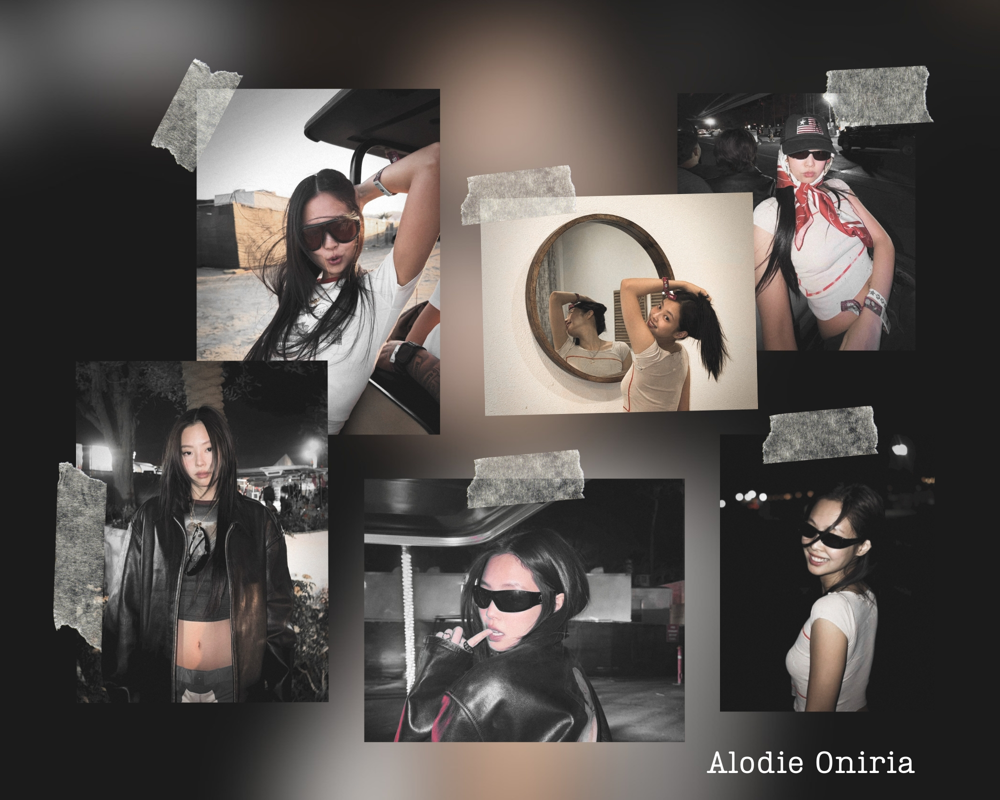
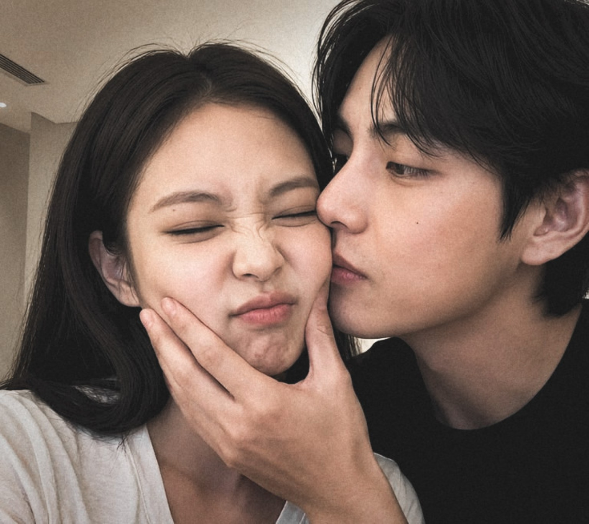

For the woman who became part of my everyday life without ever needing to be in the same place.
I know you through the way you stay, the patience you give me, and all the little things that have slowly become familiar.
You may be far from me, but you have never felt absent from my life.
SIGNAL 01RECEIVED DAILY

the way you stay
The Way You Stay
Somehow, you became someone I naturally look for in everything. A random thought feels more complete after I tell you about it, and a tiring day becomes lighter when I finally get to talk to you.
Even the most ordinary conversations matter because they are moments I get to share with you.
VOICE
the sound that settles me
Your Voice
Your voice has become one of my favorite forms of comfort. I could listen to you talk about your day, complain about something, laugh at something random, or say things that probably feel completely ordinary to you.
Especially on nights when I cannot sleep, hearing you quiets my thoughts and makes everything inside me feel calmer.
My favorite lullaby, and one of my sweetest addictions.
SIGNAL 03YOU FOUND ME
Sayang kemana?Sayang dimana?Ayang masih bobo?Ayang lagi sibuk?Ayang kok ilang? Aku kangenJangan tinggalin aku, aku kangen
my silence is never invisible to you
When You Look for Me
Whenever I disappear into work, sleep, or whatever has taken over my day, you look for me. My phone fills with your messages asking where I am and why I suddenly went quiet.
I like knowing that my absence is noticeable to you. Every time you search for me, you remind me that I have a real place in your life.
And I love knowing that you want me there.

LESSON 04STILL LEARNING
love is something I keep learning
What You Have Taught Me
You have taught me more patience than you probably realize. Being with you has shown me that love is not only about being affectionate when everything feels easy.
Sometimes it means listening before reacting, giving each other time to explain, and remembering that we are supposed to understand one another rather than win against each other.
I want to keep learning how to love you in the ways you can truly feel.
KINDNESSPATIENCECARESOFTNESS
nothing gentle in you is ordinary to me
The Good in You
I love the kindness in you—the way you care, the patience you have given me, and the small efforts you make without turning them into something you need praise for.
There is a softness in you that I never want to overlook simply because I have grown accustomed to receiving it.
You have a good heart, and I want to become someone who knows how to take care of it properly.
REMINDER 06ANOT A COMPETITION
EFFORT≠ONE SHAPE
one thing I need you to remember
Never Measure Your Love Against Mine
Maybe some of my efforts are easier to see because I express love through things I create, words I write, or gestures that look bigger from the outside.
But love has never been a competition, and effort cannot be judged only by how visible it is.
The way you stay is effort.The way you try to understand me is effort.Your patience is effort.The way you look for me is effort.Choosing me is effort.
We simply love in different ways. I do the things I do because loving you makes me happy, not because I expect you to repay me in exactly the same form.
I have never felt that I was loving you alone. I feel your effort. I recognize it. And I have always considered it enough.
a permanent note
A Permanent Note
You are more than someone who lives behind a screen.
You are the voice that helps me sleep, the person who looks for me whenever I disappear, and the patience that continues to teach me how love should be handled.
I may not always use the perfect words or understand everything immediately. But I never want my mistakes to become an excuse for loving you carelessly.
TRANSMISSION HELD143.00 MHz
I want to keep listening, learning, and becoming better for us—not because you asked me to become someone else, but because loving you makes me want to give you a better version of the love I already have.
You are here.
You are wanted.
And you are loved more deeply than I probably know how to explain.